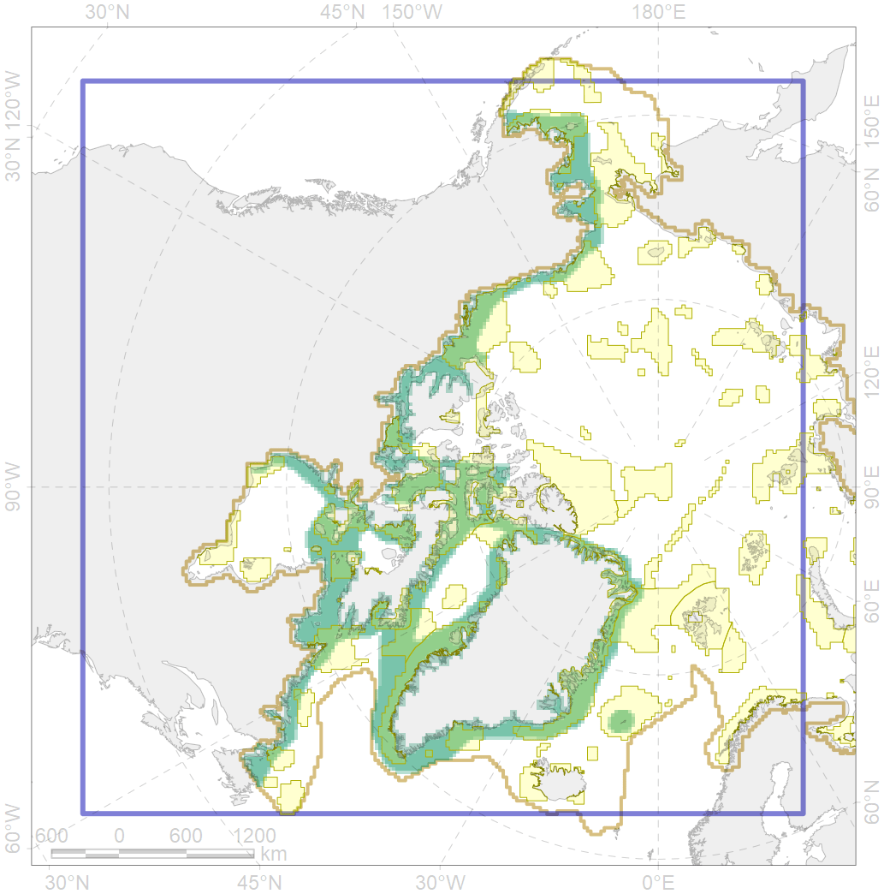
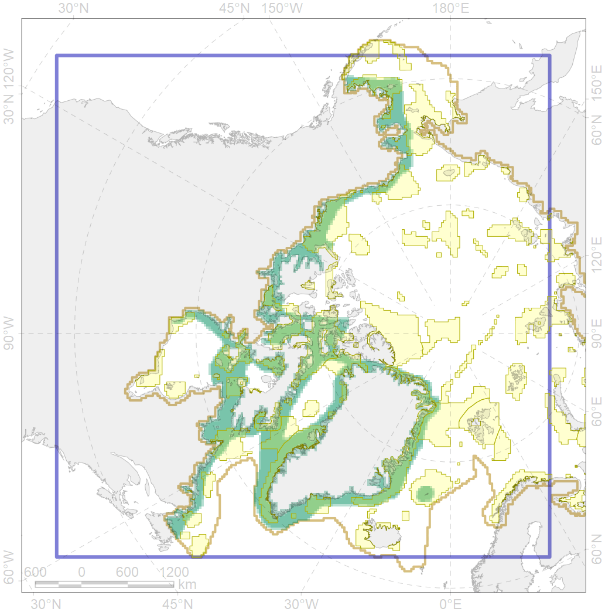

4055
 

| CF ID | 4055 |
| CF Name | Range of the Shorthorn Sculpin (Myoxocephalus scorpius), American populations |
| Time Period | 1950-2010s |
| Source(s) | Pethon 2005; Whienerhoither et al., 2011; Mecklenburg et al., 2018 |
| Seasonality | January-December |
| Depth Horizon | 0-250 |
| Methodology | Compiled from literature sources based on field observations |
| Author Name | N. Chernova |
| Notes | |
| Conservation Target Set in the Scenario | 0.03 |
| Conservation Target Achieved in the Scenario | 0.529 (Scenario: 1763.4%) |
| PAC ID | Proportion in the PAC | Contribution to ArcNet Target Achievement | PAC’s Contribution to the Achieved Target |
|---|---|---|---|
| 3 | 3.6% | 112.9% | 6.4% |
| 5 | 0.8% | 18.3% | 1.0% |
| 6 | 0.0% | 1.5% | 0.1% |
| 28 | 0.0% | 0.2% | 0.0% |
| 29 | 1.1% | 34.5% | 2.0% |
| 32 | 6.3% | 195.3% | 11.1% |
| 33 | 1.4% | 47.5% | 2.7% |
| 34 | 1.3% | 41.7% | 2.4% |
| 42 | 1.7% | 49.3% | 2.8% |
| 43 | 0.1% | 4.0% | 0.2% |
| 44 | 7.0% | 217.6% | 12.3% |
| 45 | 2.5% | 78.6% | 4.5% |
| 46 | 1.3% | 38.1% | 2.2% |
| 48 | 0.1% | 3.6% | 0.2% |
| 49 | 0.5% | 13.9% | 0.8% |
| 50 | 0.1% | 3.8% | 0.2% |
| 51 | 1.7% | 51.1% | 2.9% |
| 52 | 5.5% | 176.9% | 10.0% |
| 54 | 0.0% | 0.9% | 0.1% |
| 60 | 1.1% | 26.3% | 1.5% |
| 61 | 0.0% | 1.1% | 0.1% |
| 62 | 4.9% | 154.1% | 8.7% |
| 65 | 3.7% | 110.4% | 6.3% |
| 66 | 1.3% | 38.5% | 2.2% |
| 67 | 2.2% | 65.6% | 3.7% |
| 68 | 0.2% | 4.6% | 0.3% |
| 69 | 0.4% | 12.3% | 0.7% |
| 72 | 0.2% | 2.1% | 0.1% |
| 73 | 1.5% | 44.5% | 2.5% |
| 75 | 0.0% | 0.3% | 0.0% |
| 76 | 2.4% | 70.5% | 4.0% |
| 77 | 0.2% | 5.5% | 0.3% |
| 78 | 0.0% | 0.6% | 0.0% |
| 79 | 0.4% | 9.8% | 0.6% |
| 80 | 0.0% | 0.1% | 0.0% |
| inner | 54.0% | 1635.7% | 92.8% |
| outer | 46.0% | 127.6% | 7.2% |